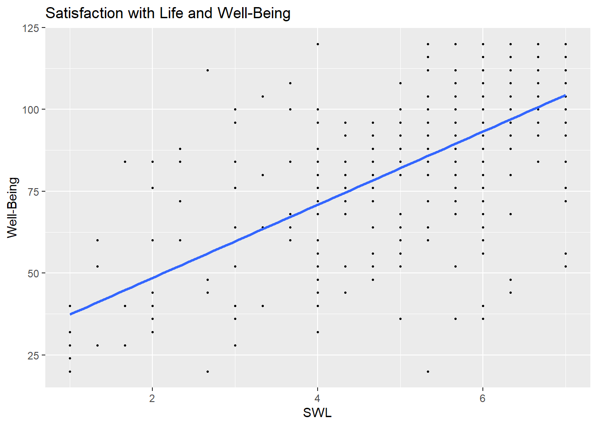
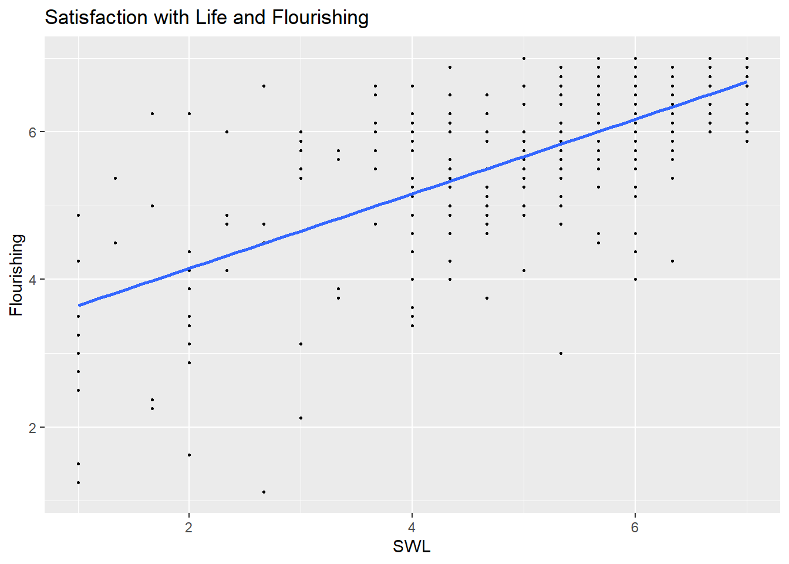
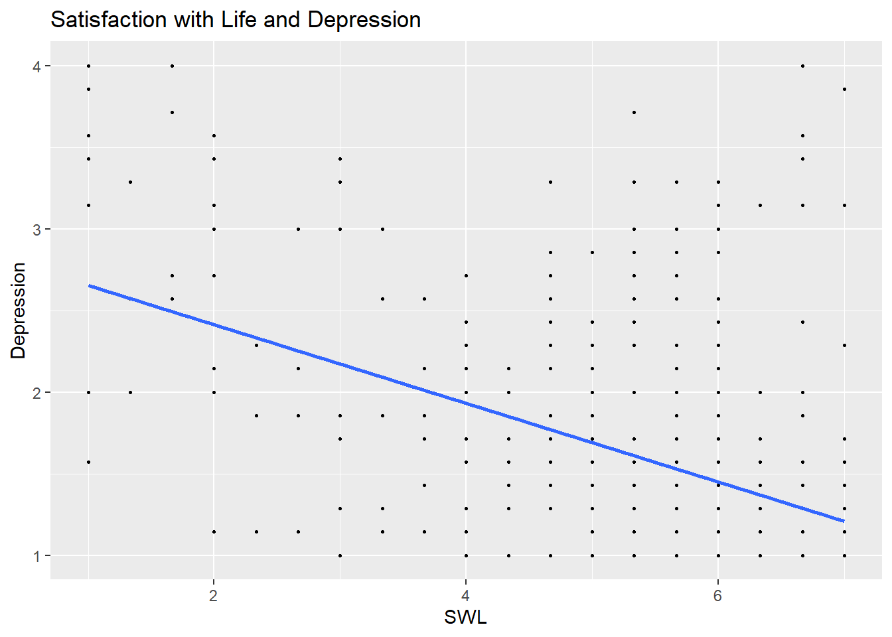

For this portfolio piece, I wanted to test myself and see if I could run some of the analyses I ran for my FYP in SPSS in R. While I did not re-run all of my analyses, I did run a subset of them. The dataset used is also already mainly cleaned. I primarily wanted to practice recoding and mean scoring and then running correlations.
library(tidyverse) ## Warning: package 'ggplot2' was built under R version 4.5.3## ── Attaching core tidyverse packages ──────────────────────── tidyverse 2.0.0 ──
## ✔ dplyr 1.1.4 ✔ readr 2.1.6
## ✔ forcats 1.0.1 ✔ stringr 1.6.0
## ✔ ggplot2 4.0.3 ✔ tibble 3.3.1
## ✔ lubridate 1.9.4 ✔ tidyr 1.3.2
## ✔ purrr 1.2.1
## ── Conflicts ────────────────────────────────────────── tidyverse_conflicts() ──
## ✖ dplyr::filter() masks stats::filter()
## ✖ dplyr::lag() masks stats::lag()
## ℹ Use the conflicted package (<http://conflicted.r-lib.org/>) to force all conflicts to become errorslibrary(tidyr)
library(haven)
library(forcats)
library(ggplot2)
confession <- read_sav("C:/Users/krysc/OneDrive/Desktop/Catholicism Study/with recode and UPDATED WHO WELLBEING SCORE scores.sav")library(tidyverse)
confessionClean <- confession %>%
#Attention Check Filter
filter(Attention_Check3 == 5)
confessionClean <- confession %>%
mutate(
# Recode measures that are on a scale of 1 to 5 (Trait Self Control & Moral Tolerance)
across(c(Trait_Self_Control_2, Trait_Self_Control_3, Trait_Self_Control_4,
Trait_Self_Control_5, Trait_Self_Control_7, Trait_Self_Control_9,
Trait_Self_Control_10, Trait_Self_Control_12, Trait_Self_Control_13,
Moral_Tolerance_3, Moral_Tolerance_5, Moral_Tolerance_7),
~ 6 - .x, .names = "{.col}R"),
)
confessionClean <- confession %>%
rowwise() %>%
mutate(
TraitSelfControl_Mean = mean(c(Trait_Self_Control_1, TRAITSC_2R, TRAITSC_3R,
TRAITSC_4R, TRAITSC_5R, Trait_Self_Control_6,
TRAITSC_7R, Trait_Self_Control_8, TRAITSC_9R,
TRAITSC_10R, Trait_Self_Control_11, TRAITSC_12R,
TRAITSC_13R), na.rm = TRUE),
Depression_Mean = mean(c(Distress_1, Distress_2, Distress_3, Distress_4, Distress_5, Distress_6, Distress_7), na.rm = TRUE),
WHO_WELLBEING_Score = sum(c(WHO_Well_Being_Index_1, WHO_Well_Being_Index_2, WHO_Well_Being_Index_3,
WHO_Well_Being_Index_4, WHO_Well_Being_Index_5), na.rm = TRUE) * 4
) %>%
ungroup()
#Correlations
cor_vars <- confessionClean %>%
select(SWL_Mean, Flourishing_Mean, WHO_WELLBEING_Score, DepressionPSYCDistress_Mean)
cor(cor_vars, use = "pairwise.complete.obs")## SWL_Mean Flourishing_Mean WHO_WELLBEING_Score
## SWL_Mean 1.0000000 0.6970902 0.6505939
## Flourishing_Mean 0.6970902 1.0000000 0.7177009
## WHO_WELLBEING_Score 0.6505939 0.7177009 1.0000000
## DepressionPSYCDistress_Mean -0.4466445 -0.5103831 -0.4182877
## DepressionPSYCDistress_Mean
## SWL_Mean -0.4466445
## Flourishing_Mean -0.5103831
## WHO_WELLBEING_Score -0.4182877
## DepressionPSYCDistress_Mean 1.0000000print(cor_vars)## # A tibble: 442 × 4
## SWL_Mean Flourishing_Mean WHO_WELLBEING_Score DepressionPSYCDistress_Mean
## <dbl> <dbl> <dbl> <dbl>
## 1 6 5.25 96 3.29
## 2 5.33 5.88 96 2.86
## 3 6 6 92 1.14
## 4 3.33 5.62 40 1.29
## 5 5 6.62 84 1.14
## 6 5.67 6.62 36 2.29
## 7 5.67 5.25 80 1.71
## 8 5.67 6.5 96 1.14
## 9 6 7 120 1
## 10 6.33 5.38 88 1.57
## # ℹ 432 more rowsggplot(data = confession, aes(x = SWL_Mean, y = WHO_WELLBEING_Score)) +
geom_point(size = .5) +
geom_smooth(method = "lm", se = FALSE) +
labs(
title = "Satisfaction with Life and Well-Being",
x = "SWL",
y = "Well-Being")## `geom_smooth()` using formula = 'y ~ x'
ggplot(data = confession, aes(x = SWL_Mean, y = Flourishing_Mean)) +
geom_point(size = .5) +
geom_smooth(method = "lm", se = FALSE) +
labs(
title = "Satisfaction with Life and Flourishing",
x = "SWL",
y = "Flourishing")## `geom_smooth()` using formula = 'y ~ x'
ggplot(data = confession, aes(x = SWL_Mean, y = DepressionPSYCDistress_Mean)) +
geom_point(size = .5) +
geom_smooth(method = "lm", se = FALSE) +
labs(
title = "Satisfaction with Life and Depression",
x = "SWL",
y = "Depression")## `geom_smooth()` using formula = 'y ~ x'
The plots above are meant to model the correlations between SWL and Depression, Well-Being, and Flourishing. Consistent with the correlation matrix, there is a positive relationship between satisfaction with life and well-being and flourishing and a negative relationship between SWL and depression.